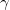

Cos-integral-func
evaluates
where  denotes Euler's constant. The approximation is based on several Chebyshev expansions.
For more information please review the s13acc function in the NAG document.
/math-97074ff222cf3d9c9b4fe372a9f5a8a4.png "C_i\left( x\right) =y+\ln x+\int_0^x\frac{\cos u-1}udu") ,x>0
,x>0